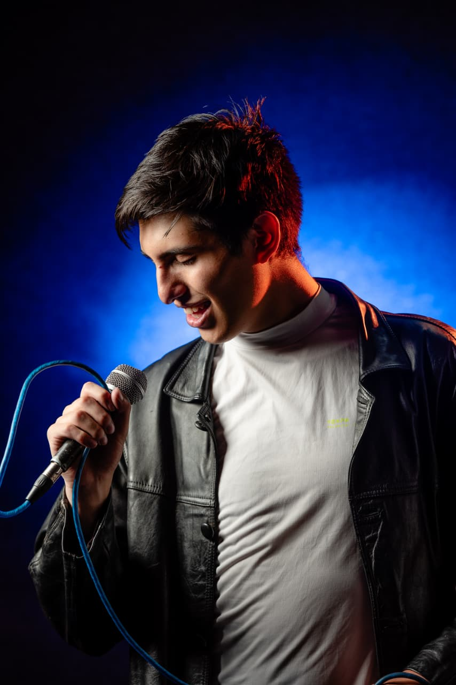
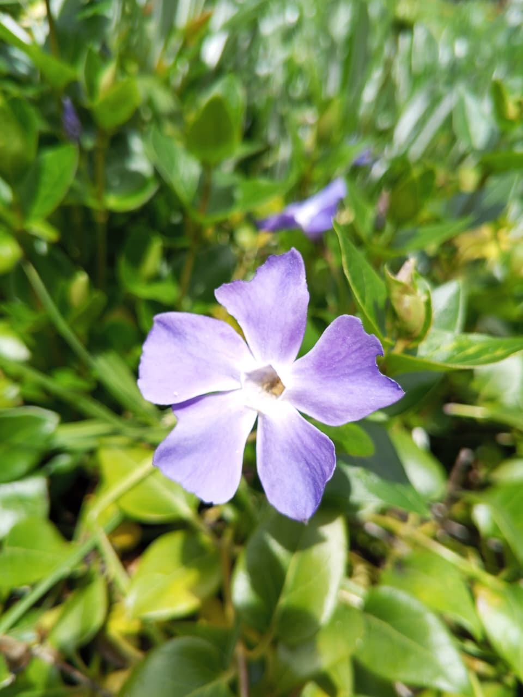
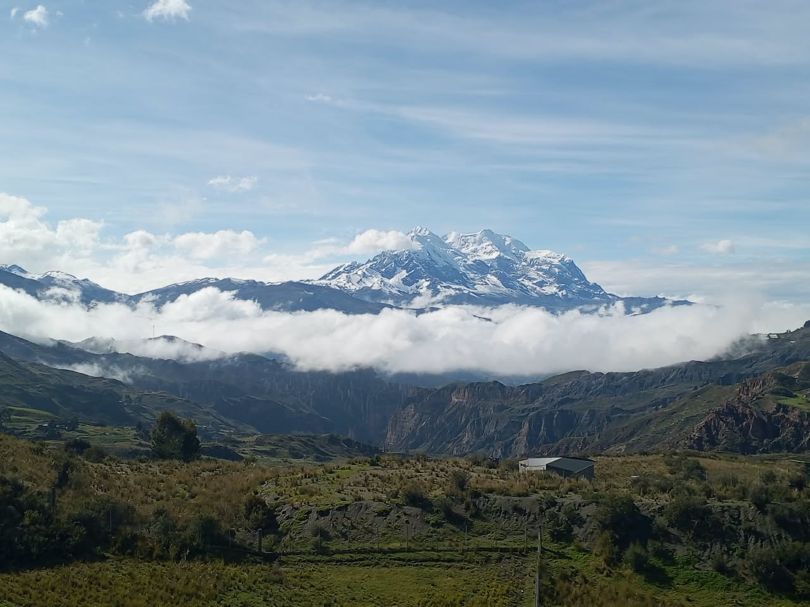
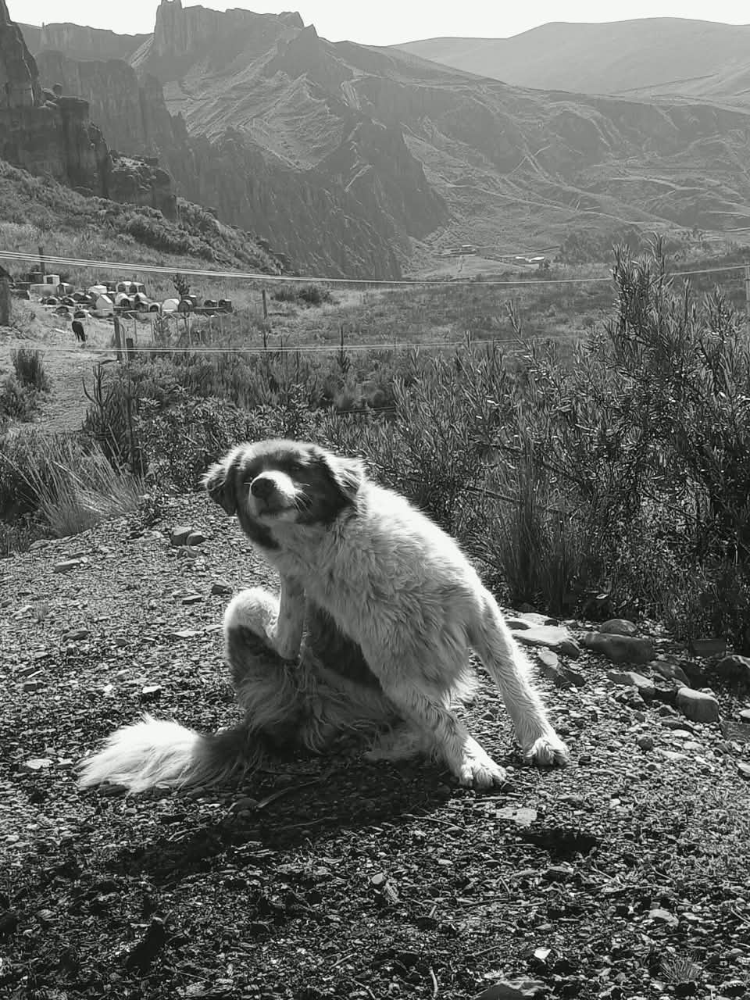
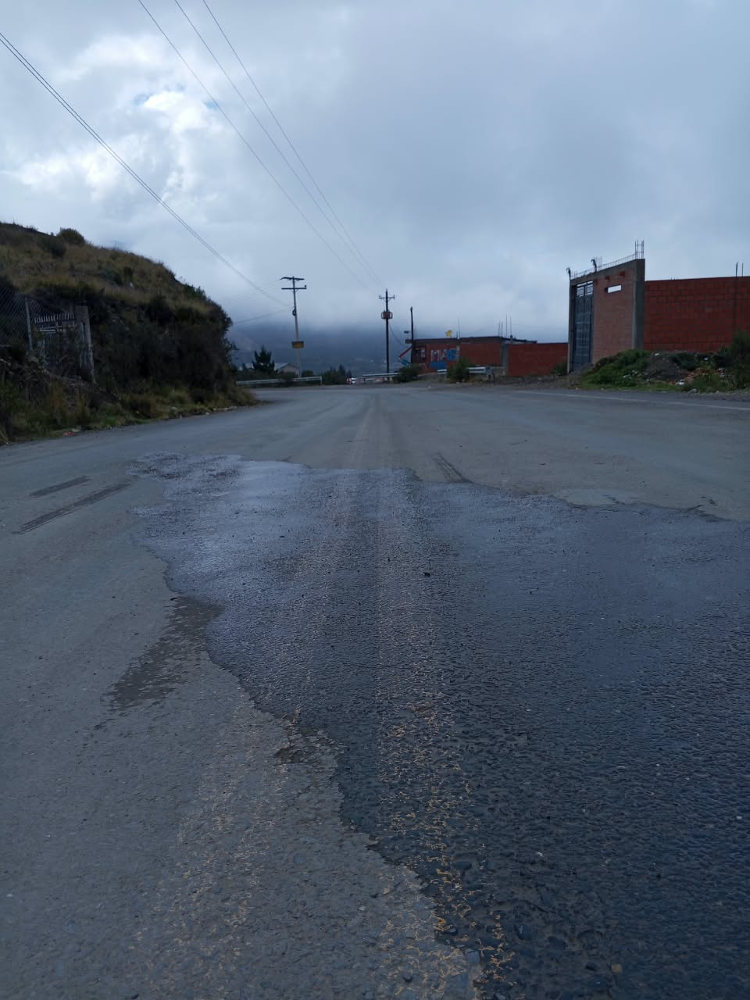

Estratega de marketing
- Empresa
- Padel 21
- Periodo
- Desde el 12 de agosto de 2025
- Funciones
- Gestión de las necesidades de la empresa para la creación de contenidos multimedia.
- Logros
- Experiencia en el área de marketing y generación de contenido.
Redes: Instagram: @Joaco_mapache · TikTok: @Joaco_El_mapache

Comunicador digital, actor y cantante.
La Paz, BoliviaMe considero una persona activa y creativa, siempre predispuesta a realizar mi trabajo con lo mejor de mí. Disfruto asumir nuevos retos y aprender constantemente, buscando crecer tanto a nivel profesional como personal en cada proyecto que emprendo.
Soy una persona que ama a Dios. Por eso considero que mis trabajos, mi desarrollo personal y cualquier actividad que realice deben hacerse con excelencia, como para Dios. Esta convicción me impulsa a actuar con responsabilidad, honestidad y compromiso en todo lo que hago.
Creo firmemente que la disciplina y la constancia son la base para alcanzar cualquier meta, y por ello me esfuerzo día a día por mejorar mis habilidades y aportar valor a cada equipo o proyecto del que formo parte.




Stop motion hecho solo con papel y dibujos de Joaquín Gonzales.
Herramientas: Stop Motion Studio y CapCut. Rol: director, productor y editor.
Material audiovisual corrupto, recuperado y editado por Joaquín Gonzales.
Herramienta: Adobe Premiere. Rol: editor.
Práctica de los cursos de doblaje.
Audio usado en la campaña de Titania's Spa, con participación de Joaquín Gonzales en la grabación.
Un análisis del caso de Cambridege analitica y la capacidad de creer fakenews.
Descripción breve de la investigación.
Ver másCómo aparece el discurso de odio en los hero shooters y sus polémicas en redes sociales desde 2020, con Marvel Rivals como caso central.
Ver másDescripción breve de la investigación.
Ver másMe interesa conocer tu opinión. ¡Escríbeme!
Su mensaje fue enviado correctamente.